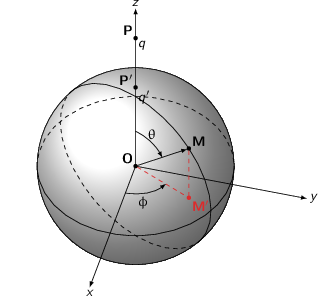
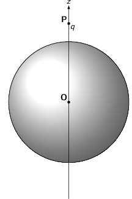
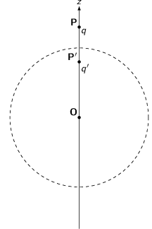
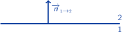
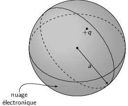

TD3 : Électrostatique dans le vide
1 Condensateur cylindrique
En considérant \(h\gg a,b\), le problème est invariant par translation le long de l'axe des cylindres. Par ailleurs, le problème est invariant par rotation soit \(E(M)=E(r)\). En coordonnées cylindriques, les plans \((\vv{u}_r,\vv{u}_\theta)\) et \((\vv{u}_r,\vv{u}_z)\) sont des plans de symétrie de la distribution de charge. On déduit que le champ électrique s'écrit
\begin{align*} \vv{E}(M)=E(r)\vv{u}_r \end{align*}Le choix de la surface de Gauss est alors un cylindre de rayon \(r\) et de hauteur \(h\)
\begin{align*} \varoiint_S\vv{E}.\,d\vv{S}&=\iiint_V\frac{\rho}{\epsilon_0}d\tau=\frac{\Upsigma Q_\text{int.}}{\epsilon_0}\\ E(r)\times2\pi rh&=\frac{\Upsigma Q_\text{int.}}{\epsilon_0}\\ \vv{E}(M)&=\frac{\Upsigma Q_\text{int.}}{2\pi\epsilon_0}\times\frac{1}{rh}\vv{u}_r \end{align*}- pour \(r < a\), \(Q_\text{int.}=0\) d'où \(\vv{E}(r < a)=\vv{0}\)
- pour \(a < r < b\), \(Q_\text{int.}=Q_a\) d'où \(\vv{E}(a < r < b)=\frac{Q_a}{2\pi\epsilon_0rh}\vv{u}_r\)
- pour \(r>b\), \(Q_\text{int.}=Q_a+Q_b=0\) d'où \(\vv{E}(r>b)=\vv{0}\)
La capacité d'un condensateur \(C\) est égale au rapport de la charge dans le condensateur sur le potentiel électrique appliqué aux bornes du condensateur soit \(C=\tfrac{Q}{V}\). Par ailleurs, le champ électrique \(\vv{E}\) est égal au gradient du potentiel électrique \(\vv{E}=-\grad\,V=-\tfrac{dV}{dr}\vv{u}_r\). Soit
\begin{align*} -\frac{dV}{dr}&=\frac{Q_a}{2\pi\epsilon_0rh}\\ -\int_{V_a}^{V_b}dV&=\int_a^b\frac{Q_a}{2\pi\epsilon_0h}\frac{dr}{r}\\ -V_b+V_a&=\frac{Q_a}{2\pi\epsilon_0h}\ln\frac{b}{a}\\ V_a&=\frac{Q_a}{2\pi\epsilon_0h}\ln\frac{b}{a}=\frac{Q_a}{C}\\ C&=\frac{2\pi\epsilon_0h}{\ln\frac{b}{a}} \end{align*}Application numérique
\begin{align*} \frac{C}{h}=\frac{2\pi\epsilon_0}{\ln\frac{b}{a}}=\frac{2\pi\times8.85\,10^{-12}}{\ln8}=\unit[2.7\,10^{-11}]{F/m} \end{align*}2 Boule conductrice en présence d'une charge ponctuelle : méthode des images

- \(V(r=R)=0\)
- L'absence de charges libres dans le volume d'un conducteur (les charges
sont surfaciques cf. Exercice #sec::prop_champ) implique que le champ
électrique \(\vv{E}_\text{int.}\) soit nul (théorème de Gauss). Le potentiel
électrique \(V_\text{int.}\) déduit de
\(\vv{E}_\text{int.}=-\grad\,V_\text{int}\) est par conséquent
constant. \(V_\text{int.}(r=R)\) étant par ailleurs nul
\begin{align*}
V_\text{int.}=V(r\leq R)=0
\end{align*}
Le problème est invariant par rotation autour de l'axe \(Oz\) et le plan \((\vv{u}_r,\vv{u}_z)\) est plan de symétrie de la distribution de charge. Le champ électrostatique \(\vv{E}\) exprimé dans le système de coordonnées cylindriques \(M=(r,\theta,z)\), a donc pour expression
\begin{align*} \vv{E}(M)=E_r(r,z)\vv{u}_r+E_z(r,z)\vv{u}_z \end{align*} - En raison de la symétrie du problème, une charge fictive \(q'\) est
nécessairement sur l'axe \(Oz\). Le potentiel alors généré en tout point \(M\)
de l'espace est la somme des potentiels induits par chaque particule soit
\begin{align*}
V(M)=\frac{1}{4\pi\epsilon_0}\left(\frac{q}{PM}+\frac{q'}{P' M}\right)
\end{align*}
où \(P'\) est la position de la charge \(q'\). Le potentiel pour \(r\to\infty\) est nul : \(V(\infty)=0\). La condition selon laquelle le potentiel est nul en tout point \(M\) de la surface de la sphère implique
\begin{align*} \frac{q}{PM}=-\frac{q'}{P' M} \end{align*}\(q'\) est donc de signe opposé à \(q\). Par suite, on déduit que
\begin{align*} q\,P' M &= -q'\,PM\\ q^2\,P' M^2 &=q^{\prime2}\,PM^2\\ q^2\,\vv{P' M}^2 &=q^{\prime2}\,\vv{PM}^2\\ q^2\,\left(\vv{P' O}+\vv{OM}\right)^2 &=q^{\prime2}\,\left(\vv{PO}+\vv{OM}\right)^2\\ \underbrace{q^2P' O^2-q^{\prime2}PO^2+q^2R^2-q^{\prime2}R^2}_{\text{\(\unicode{x2460}\)}}&=\underbrace{q^{\prime2}2\vv{PO}.\vv{OM}-q^22\vv{P' O}.\vv{OM}}_{\text{\(\unicode{x2461}\)}} \end{align*}Le premier membre de l'équation est indépendant de \(M\) et est donc constant. Le second membre dépend de \(M\) mais doit demeurer constant pour tout \(M\) appartenant à la surface de la sphère. Cette égalité est ainsi vérifiée pour \(M(r,\theta,z=0)\) soit \(\vv{OM}\perp\vv{u}_z\). On obtient \(\unicode{x2460}\)=\(\unicode{x2461}\)=0 et on déduit
\begin{align*} \text{\(\unicode{x2461}\)}=0&=2\vv{OM}.\left(q^{\prime2}\vv{PO}-q^2\vv{P' O}\right)\\ \vv{P' O}&=\frac{q^{\prime2}}{q^2}\vv{PO}\parallel\vv{u}_z \end{align*}À partir du premier membre \(\unicode{x2460}\), on déduit
\begin{align*} \text{\(\unicode{x2460}\)}=0&=q^2P' O^2-q^{\prime2}PO^2+q^2R^2-q^{\prime2}R^2\\ R^2\left(q^{\prime2}-q^2\right)&=q^2P' O^2-q^{\prime2}PO^2\\ &=q^2\times\frac{q^{\prime4}}{q^4}PO^2-q^{\prime2}PO^2\\ &=q^{\prime2}PO^2\left(\frac{q^{\prime2}}{q^2}-1\right)\\ R^2&=PO^2\times\left(\frac{q'}{q}\right)^2\\ q'&=-\frac{qR}{PO}\\ P' O&=\frac{R^2}{PO}\leq R \end{align*} - À partir de l'équation locale \(\div\vv{E}=\tfrac{\rho}{\epsilon_0}\) et de
l'expression du potentiel électrique \(\vv{E}=-\grad V\), on obtient
l'équation de Poisson
\begin{align*}
-\div\left(\grad V\right)&=\frac{\rho}{\epsilon_0}\\
-\Delta V&=\frac{\rho}{\epsilon_0}\\
\Delta V+\frac{\rho}{\epsilon_0}&=0
\end{align*}
Les conditions aux limites imposées par la boule sont que le potentiel électrique en tout point de la surface soit nul \(V(r=R)=0\). Pour tout point \(r>R\), le problème "charge \(q\) + boule conductrice" est équivalent à la situation "charge \(q\) + charge \(q'\)" du fait que les deux situations obéissent à la même équation de Poisson et satisfont aux mêmes conditions aux limites \(V(r=R)=0\). Le théorème d'unicité implique donc les mêmes solutions pour chacune des représentations. Cette équivalence n'est vrai que pour \(r>R\) car à l'intérieur de la boule le champ électrostatique demeure nul ce qui n'est pas le cas dans la situation "charge \(q\) + charge \(q'\)".
  - Calcul du champ \(\vv{E}(r\geq R)\) : combinaison des champs coulombiens de
chacune des charges \(q\) et \(q'\)
\begin{align*}
\vv{E}(M)&=\frac{1}{4\pi\epsilon_0}\left(\frac{q}{PM^3}\vv{PM}+\frac{q'}{P' M^3}\vv{P' M}\right)\\
&=\frac{1}{4\pi\epsilon_0}\left[\left(\frac{q}{PM^3}+\frac{q'}{P' M^3}\right)\vv{OM}+\underbrace{\frac{q\vv{PO}}{PM^3}+\frac{q'\vv{P' O}}{P' M^3}}_{\text{\(\unicode{x2460}\)}}\right]
\end{align*}
Sachant que \(\vv{P' O}=\frac{q^{\prime2}}{q^2}\vv{PO}\) et \(P' M=-\frac{q'}{q}PM\), l'expression \(\unicode{x2460}\) devient
\begin{align*} \text{\(\unicode{x2460}\)}&=\frac{q\vv{PO}}{PM^3}+\frac{q'\vv{P' O}}{P' M^3}\\ &=\frac{q\vv{PO}}{PM^3}+\frac{q'\times q^{\prime2}}{q^2}\times\frac{\vv{PO}}{-q^{\prime3}}\times\frac{q^3}{PM^3}\\ &=0 \end{align*}soit pour \(M\in\) sphère
\begin{align*} \vv{E}(M)&=\frac{R\vv{u}_r}{4\pi\epsilon_0}\left(\frac{q}{PM^3}+\frac{q'}{P' M^3}\right)\\ &=\frac{q\vv{R}}{4\pi\epsilon_0\,PM^3}\times\left(1-\frac{q^2}{q^{\prime2}}\right)\\ &=\frac{q\vv{R}}{4\pi\epsilon_0\,PM^3}\times\left(1-\frac{PO^2}{R^2}\right) \end{align*}Conditions de continuité du champ électrique au passage d'une surface
\begin{align*} \vv{n}_{\tiny1\to2}.\left(\vv{E}_2-\vv{E}_1\right)&=\frac{\sigma}{\epsilon_0}\rightarrow\text{discontinuité de la composante normale}\\ \vv{n}_{\tiny1\to2}\times\left(\vv{E}_2-\vv{E}_1\right)&=\vv{0}\rightarrow\text{continuité de la composante tangentielle} \end{align*}
Étant donné que \(\vv{E}_\text{int.}=\vv{E}_1=\vv{0}\), la densité surfacique de charge est égale à
\begin{align*} \vv{E}(M\in\text{sphère})&=\frac{\sigma}{\epsilon_0}\vv{u}_r\\ \sigma&=\frac{qR}{4\pi}\left(1-\frac{PO^2}{R^2}\right)\times\frac{1}{PM^3} \end{align*}La charge totale \(Q_\text{tot.}\) de la boule conductrice est donc
\begin{align*} Q_\text{tot.}&=\int_0^{2\pi}d\phi\int_0^\pi d\theta\times R^2\sin\theta\times\sigma(\theta)\\ &=\frac{2\pi qR^3}{4\pi R^2}\left(R^2-PO^2\right)\times\int_0^\pi d\theta\frac{\sin\theta}{PM^3}\\ &\text{avec }PM^2=PO^2+OM^2+2\vv{PO}.\vv{OM}=PO^2+R^2-2R\,PO\cos\theta\\ Q_\text{tot.}&=\frac{qR(R^2-PO^2)}{2}\times\underbrace{\int_0^\pi\frac{\sin\theta d\theta}{\left(PO^2+R^2-2R\,PO\cos\theta\right)^{3/2}}}_{\text{\(\unicode{x2460}\)}} \end{align*}Pour calculer \(\unicode{x2460}\), on pose \(x=\cos\theta\) avec \(x\in[1,-1]\) et \(dx=-\sin\theta d\theta\)
\begin{align*} \text{\(\unicode{x2460}\)}&=\int_1^{-1}\frac{-dx}{\left(PO^2+R^2-2R\,POx\right)^{3/2}}\\ &\text{or }\int\frac{dx}{(b+ax)^{3/2}}=\frac{1}{(b+ax)^{1/2}}\times-\frac{2}{a}\\ \text{\(\unicode{x2460}\)}&=\frac{1}{R\,PO}\left(\frac{1}{\surd PO^2+R^2-2R\,PO}-\frac{1}{\surd PO^2+R^2+2R\,PO}\right)\\ &=\frac{1}{R\,PO}\left(\frac{1}{PO-R}-\frac{1}{PO+R}\right)\\ &=\frac{1}{R\,PO}\left(\frac{2R}{PO^2-R^2}\right) \end{align*}Finalement \(Q_\text{tot.}\) devient
\begin{align*} Q_\text{tot.}&=\frac{qR(R^2-PO^2)}{2}\times\frac{1}{R\,PO}\times\frac{2R}{PO^2-R^2}\\ &=-\frac{qR}{PO}=q' \end{align*}Le théorème de Gauss impose que \(Q_\text{tot.}\) soit égal à la somme des charges à l'intérieur de la sphère. La charge fictive \(q'\) est par construction à l'intérieur de la sphère d'où \(Q_\text{tot.}=q'\).
- Calcul de la force exercée par la charge \(q\) sur \(q'\) ≡ à calculer la force exercée par la charge \(q\) sur la boule conductrice. \begin{align*} \vv{F}_{q\to q'}&=\vv{F}_{q\to\text{boule}}\\ &=q'\vv{E}_{q\to q'}\\ &=\frac{q' q}{4\pi\epsilon_0}\times\frac{\vv{PP'}}{PP^{\prime3}}=\frac{q' q}{4\pi\epsilon_0}\times\frac{-\vv{u}_z}{PP^{\prime2}}\\ &\text{avec }PP^{\prime2}=PO^2+OP^{\prime2}=PO^2+\frac{R^4}{PO^2}=\frac{PO^4+R^4}{PO^2}\\ \vv{F}_{q\to\text{boule}}&=-\frac{qq'}{4\pi\epsilon_0}\times\frac{PO^2}{PO^4+R^4}\vv{u}_z\\ &=\frac{q^2}{4\pi\epsilon_0}\frac{R\,PO}{PO^4+R^4}\vv{u}_z \end{align*}
- L'absence de charges libres dans le volume d'un conducteur (les charges
sont surfaciques cf. Exercice #sec::prop_champ) implique que le champ
électrique \(\vv{E}_\text{int.}\) soit nul (théorème de Gauss). Le potentiel
électrique \(V_\text{int.}\) déduit de
\(\vv{E}_\text{int.}=-\grad\,V_\text{int}\) est par conséquent
constant. \(V_\text{int.}(r=R)\) étant par ailleurs nul
\begin{align*}
V_\text{int.}=V(r\leq R)=0
\end{align*}
- \(V_0\neq0\)
- Le principe de superposition implique
\begin{align*}
V(M)=V_0=\frac{1}{4\pi\epsilon_0}\left(\underbrace{\frac{q}{PM}+\frac{q'}{P'M}}_{=0}+\frac{q''}{P''M}\right)
\end{align*}
soit
\begin{align*} q''=4\pi\epsilon_0V_0\times P''M=\text{constante} \end{align*}impliquant que \(P''\equiv O\) et donc \(q''=4\pi\epsilon_0RV_0\)
- Les charges fictives/virtuelles \(q'\) et \(q''\) sont à l'intérieur de la
boule conductrice d'où \(Q_\text{boule}=q'+q''=0\). La charge \(q''\) est
ainsi égale à \(-q'=\frac{qR}{PO}\) soit un potentiel \(V_0\) égal à
\begin{align*}
4\pi\epsilon_0RV_0&=-q'=\frac{qR}{PO}\\
V_0&=\frac{1}{4\pi\epsilon_0}\times\frac{q}{PO}
\end{align*}
i.e. le potentiel généré en \(O\) par la particule \(q\).
- Le principe de superposition implique
\begin{align*}
V(M)=V_0=\frac{1}{4\pi\epsilon_0}\left(\underbrace{\frac{q}{PM}+\frac{q'}{P'M}}_{=0}+\frac{q''}{P''M}\right)
\end{align*}
- Boule conductrice dans un champ électrostatique uniforme

- Les champs électrostatiques créés par chaque charge se superposent en \(M\)
\begin{align*}
\vv{E}(M)&=\frac{1}{4\pi\epsilon_0}\left(\frac{q}{PM^3}\vv{PM}-\frac{q}{NM^3}\vv{NM}\right)\\
\text{avec }\vv{PM}&=\vv{PO}+\vv{OM}\\
PM^3&=\left(Z^2+r^2+2\vv{PO}.\vv{OM}\right)^{3/2}\\
PM^3&=Z^3\left(1-2\frac{r}{Z}\cos\theta+\frac{r^2}{Z^2}\right)^{3/2}
\end{align*}
Pour \(r\leq R\), l'expression de la longueur \(PM\) devient au premier ordre en \(\frac{r}{Z}\) (\(Z\gg R\))
\begin{align*} PM^3&\simeq Z^3\left(1-2\frac{r}{Z}\cos\theta\right)^{3/2}\\ \frac{1}{PM^3}&\simeq\frac{1}{Z^3}\left(1+3\frac{r}{Z}\cos\theta\right) \end{align*}De même
\begin{align*} \frac{1}{NM^3}&\simeq\frac{1}{Z^3}\left(1-3\frac{r}{Z}\cos\theta\right) \end{align*}Le champ électrique au voisinage de la boule conductrice devient
\begin{eqnarray*} \vv{E}(r\leq R)&=\frac{1}{4\pi\epsilon_0}\times\frac{q}{Z^3}\times&\left[\vv{OM}\left(\cancel{1}+3\frac{r}{Z}\cos\theta\right)-\vv{OM}\left(\cancel{1}-3\frac{r}{Z}\cos\theta\right)\right.\\ &&\left.+\vv{PO}\left(1+3\frac{r}{Z}\cos\theta\right)-\vv{NO}\left(1-3\frac{r}{Z}\cos\theta\right)\right]\\ &=\frac{1}{4\pi\epsilon_0}\times\frac{q}{Z^3}\times&\left[\cancel{6\frac{r^2}{Z}}(\propto\tfrac{r^2}{Z^2}\ll1)\cos\theta\vv{u}_r\right.\\ &&\left.+\vv{PO}\left(1+3\frac{r}{Z}\cos\theta\right)-\vv{NO}\left(1-3\frac{r}{Z}\cos\theta\right)\right]\\ &=\frac{1}{4\pi\epsilon_0}\times\frac{q}{Z^3}\times&\left[\vv{PO}\left(1+\cancel{3\frac{r}{Z}\cos\theta}\right)-\vv{NO}\left(1-\cancel{3\frac{r}{Z}\cos\theta}\right)\right]\\ &=\frac{1}{4\pi\epsilon_0}\times\frac{q}{Z^3}\vv{PN}\\ &=-\frac{1}{4\pi\epsilon_0}\times\frac{2q}{Z^2}\vv{u}_z&\rightarrow\text{champ électrique constant pour }r\leq R\\ \end{eqnarray*}Le champ ainsi généré correspond au champ électrique généré par un dipôle électrique \(\vv{p}=q\vv{PN}\) (où la charge \(q\) est en \(P\) et la charge \(-q\) est en \(N\), cf. Cours Chapitre 2, page 44).
- Nous avons établi à la question 1.d) qu'en présence d'une charge
ponctuelle \(q\), la densité surfacique de charge était
\begin{align*}
\sigma=\frac{q}{4\pi}\times\frac{R^2-PO^2}{R}\times\frac{1}{PM^3}
\end{align*}
où \(P\) est la position de la charge \(q\) et \(M\) est un point situé à la surface de la boule. On déduit ainsi que la charge \(+q\) génère une densité surfacique
\begin{align*} \sigma_+=\frac{q}{4\pi}\times\frac{R^2-PO^2}{R}\times\frac{1}{PM^3} \end{align*}tandis que la charge \(-q\) placée en \(N\) implique une densité surfacique
\begin{align*} \sigma_-=\frac{-q}{4\pi}\times\frac{R^2-NO^2}{R}\times\frac{1}{NM^3} \end{align*}En ne considérant toujours que le premier ordre en \(\frac{R}{Z}\), on obtient une densité surfacique totale
\begin{align*} \sigma_\text{totale}&=\sigma_++\sigma_-\\ &\simeq\frac{q\times(R^2-Z^2)}{4\pi R}\times\frac{1}{Z^3}\left(\cancel{1}+\frac{3R}{Z}\cos\theta-\cancel{1}+\frac{3R}{Z}\cos\theta\right)\\ &\text{avec } R^2-Z^2=Z^2(-1+\frac{R^2}{Z^2})\simeq-Z^2\\ &\simeq-\frac{3q}{2\pi Z^2}\cos\theta \end{align*}Le champ électrique au voisinage de la surface de la boule n'est plus uniforme du fait de la présence de charge en surface de cette boule.
- Le champ dipolaire électrique s'écrit
\begin{align*}
\vv{E}_\text{dipôle}&=-\frac{q}{2\pi\epsilon_0Z^2}\vv{u}_z\\
&=\frac{\sigma_0}{3\epsilon_0}\vv{u}_z\\
&\text{où }\sigma_\text{totale}=-\frac{3q}{2\pi Z^2}\cos\theta=\sigma_0\cos\theta
\end{align*}
Le champ électrique à l'intérieur de la boule conductrice demeurant nul, on déduit que le champ électrique \(\vv{E}_\sigma\) crée par la densité surfacique de charge \(\sigma_\text{totale}\) s'écrit
\begin{align*} \vv{E}_\text{int.}=\vv{0}&=\vv{E}_\text{dipôle}+\vv{E}_\sigma\\ \vv{E}_\sigma&=-\frac{\sigma_0}{3\epsilon_0}\vv{u}_z \end{align*} - La pression électrostatique \(P\) est égale à
\(\frac{\sigma^2}{2\epsilon_0}\). C'est par ailleurs, la force
électrostatique par unité de surface \(P=\frac{d\vv{F}}{d\vv{S}}\). La force
exercée sur l'hémisphère supérieur est ainsi
\begin{align*}
d\vv{F}_1&=\frac{\sigma^2}{2\epsilon_0}\,d\vv{S}\\
\vv{F}_1&=\int_0^{2\pi}d\phi\int_0^{\pi/2}d\theta\frac{\sigma_0^2}{2\epsilon_0}\cos^2\theta R^2\sin\theta\vv{u}_r
\end{align*}

Seule la composante suivant \(\vv{u}_z\) de la force est non nulle soit en remplaçant \(\vv{u}_r=\vv{u}_z\cos\theta\), la force \(\vv{F}_1\) devient
\begin{align*} \vv{F}_1&=\int_0^{2\pi}d\phi\int_0^{\pi/2}d\theta\frac{\sigma_0^2}{2\epsilon_0}\cos^3\theta R^2\sin\theta\vv{u}_z \end{align*}En procédant au changement de variable \(x=\cos\theta\) avec \(x\in[1,0]\) et \(dx=-\sin\theta d\theta\)
\begin{align*} \vv{F}_1&=2\pi\frac{\sigma_0^2}{2\epsilon_0}R^2\int_0^1x^3dx\vv{u}_z\\ &=\frac{\pi R^2\,\sigma_0^2}{\epsilon_0}\times\frac{1}{4}\vv{u}_z\\ &=\frac{\pi R^2\,\sigma_0^2}{4\epsilon_0}\vv{u}_z=\frac{\pi R^2}{4\epsilon_0}\times\frac{9q^2}{4\pi^2Z^4}\vv{u}_z\\ \vv{F}_2&=-\vv{F}_1=-\frac{\pi R^2\,\sigma_0^2}{4\epsilon_0}\vv{u}_z \end{align*}
- Les champs électrostatiques créés par chaque charge se superposent en \(M\)
\begin{align*}
\vv{E}(M)&=\frac{1}{4\pi\epsilon_0}\left(\frac{q}{PM^3}\vv{PM}-\frac{q}{NM^3}\vv{NM}\right)\\
\text{avec }\vv{PM}&=\vv{PO}+\vv{OM}\\
PM^3&=\left(Z^2+r^2+2\vv{PO}.\vv{OM}\right)^{3/2}\\
PM^3&=Z^3\left(1-2\frac{r}{Z}\cos\theta+\frac{r^2}{Z^2}\right)^{3/2}
\end{align*}
3 Forces de Van der Waals DM
3.1 Modèle de l'électron élastiquement lié : moment dipolaire induit d'un atome

- La densité volumique de charge \(\rho\) du nuage électronique est égale à \begin{align*} \frac{4}{3}\pi\,a^3\times\rho&=-q\\ \rho=-\frac{3q}{4\pi\,a^3} \end{align*}
- Tout plan contenant le vecteur radial \(\vv{u}_r\) est plan de symétrie de la
distribution de charge au sein du nuage électronique : le champ électrique
\(\vv{E}_\text{int.}\) est donc colinéaire à \(\vv{u}_r\). Par ailleurs, le
problème est invariant par rotation d'angle θ et φ, le champ
électrique ne dépendant que de la distance au centre du nuage.
En choisissant comme surface de Gauss, une sphère centrée sur le centre du nuage et de rayon \(r\), on a
\begin{align*} \varoiint_\text{sphère}\vv{E}_\text{int.}.\vv{dS}&=\iiint_\text{volume int.}\frac{\rho}{\epsilon_0}\,d\tau\\ 4\pi\,r^2\,\vv{E}_\text{int.}(r)&=\iiint_\text{volume int.}\frac{\rho}{\epsilon_0}\,d\tau \end{align*}- pour \(r>a\), \begin{align*} \vv{E}_\text{int.}=-\frac{q}{4\pi\epsilon_0\,r^2}\vv{u}_r \end{align*}
- pour \(r
En l'absence de champ externe, la force exercée par le nuage sur le noyau tend à ramener ce dernier au centre du nuage i.e. en \(r=0\).
- En présence du champ externe, la force totale s'exerçant sur le noyau est
\(\vv{F}=+q\left(\vv{E}_\text{int.}+\vv{E}_\text{ext.}\right)\). L'équilibre
est atteint pour \(\vv{F}=\vv{0}\) soit
\begin{align*}
\frac{q\vv{r}}{4\pi\epsilon_0\,a^3}&=\vv{E}_\text{ext.}\\
\vv{r}&=\frac{4\pi\epsilon_0\,a^3}{q}\vv{E}_\text{ext.}<\vv{a}\\
&\text{ soit }E_\text{ext.}<\frac{q}{4\pi\epsilon_0\,a^2}
\end{align*}
Si \(E_\text{ext.}>\frac{q}{4\pi\epsilon_0\,a^2}\), le champ électrique du nuage électronique ne peut contrebalancer le champ externe qui "dissocie" électriquement le nuage du noyau : noyau et nuage ne sont plus liés.
- Le moment dipolaire \(\vv{p}\) est égal à \(q\,\vv{r}\) soit en fonction du champ
externe
\begin{align*}
\vv{p}=4\pi\epsilon_0\,a^3\vv{E}_\text{ext.}
\end{align*}
En l'absence de champ externe, le moment dipolaire induit est nul. Par ailleurs, le moment dipolaire étant égal à \(\alpha\epsilon_0\vv{E}_\text{ext.}\), on déduit que \(\alpha = 4\pi\,a^3\) et qu'en conséquence la dimension de \(\alpha\) est celle d'un volume.
- Application numérique à l'atome d'Hélium : \begin{align*} \alpha&=4\pi\,\left(7\,10^{-10}\right)^3=\unit[4.3\,10^{-27}]{m}^3\\ E_\text{ext.}^\text{max}&=\frac{q}{4\pi\epsilon_0\,a^2}\\ &=\frac{3.2\,10^{-19}}{4\pi\times8.85\,10^{-12}\times\left(7\,10^{-10}\right)^2}\\ &=\unit[5.9\,10^9]{V/m} \end{align*}
3.2 Forces de Van der Waals
- L'expression du moment dipolaire \(\vv{p}_1\) est \(q_1 2a\,\vv{u}_z\). En raison des
symétries du problème à savoir que l'axe \(Oz\) porte les deux charges \(\pm
q_1\), les plans \((\vv{u}_x,\vv{u}_z)\) et \((\vv{u}_y,\vv{u}_z)\) sont plans de
symétrie de la distribution de charge et \(\vv{E}\) est donc colinéaire à
\(\vv{u}_z\).

Pour déterminer le champ électrique sur l'axe \(Oz\), on superpose les champs coulombiens générés par chacune des charges \(\pm q_1\) soit
\begin{align*} \vv{E}&=\frac{q_1}{4\pi\epsilon_0\,\left(z-a\right)^2}\,\vv{u}_z-\frac{q_1}{4\pi\epsilon_0\,\left(z+a\right)^2}\,\vv{u}_z\\ &=\frac{q_1}{4\pi\epsilon_0}\,\left(\frac{1}{\left(z-a\right)^2}-\frac{1}{\left(z+a\right)^2}\right)\,\vv{u}_z\\ \text{avec }z\gg a\quad\vv{E}&\simeq\frac{q_1}{4\pi\epsilon_0\,z^2}\left(\cancel{1}+\frac{2a}{z}-\cancel{1}+\frac{2a}{z}\right)\,\vv{u}_z\\ &\simeq\frac{\vv{p}_1}{2\pi\epsilon_0\,z^3} \end{align*} - Supposons que les charges \(\pm q_2\) soient positionnées de la façon suivante

la force qu'exerce le premier dipôle sur le second est égale à
\begin{align*} \vv{F}&=q_2\vv{E}(z+b)-q_2\vv{E}(z-b)\\ &=\frac{\vv{p}_1\,q_2}{2\pi\epsilon_0}\left(\frac{1}{\left(z+b\right)^3}-\frac{1}{\left(z-b\right)^3}\right)\\ \text{avec }z\gg b\quad\vv{F}&\simeq\frac{\vv{p}_1\,q_2}{2\pi\epsilon_0\,z^3}\left(\cancel{1}-\frac{3b}{z}-\cancel{1}-\frac{3b}{z}\right)\\ &\simeq-\frac{\vv{p}_1\,q_2\,2b\times3}{2\pi\epsilon_0\,z^4}=-\frac{3p_1p_2}{2\pi\epsilon_0\,z^4}\vv{u}_z\text{ où }p_2=q_2\,2b \end{align*}Dans cette orientation, la force exercée par le dipôle 1 sur le dipôle 2 est donc attractive. En revanche, si la polarité du dipôle 2 est inversée, la force est alors répulsive.
- Force de Keesom : interaction entre deux molécules présentant chacune un
moment dipolaire permanent
Le temps passé dans la configuration où \(\vv{p}_1\) et \(\vv{p}_2\) sont alignés est égal à
\begin{align*} \frac{t_1}{t_1+t_2}&=A\exp\left(\frac{\vv{p}_2.\vv{E}_{1\to2}}{k_BT}\right)\\ &\simeq A\left(1+\frac{\vv{p}_2.\vv{E}_{1\to2}}{k_BT}\right) \end{align*}De même, le temps \(t_2\) pendant lequel les dipôles sont inversés s'écrit
\begin{align*} \frac{t_2}{t_1+t_2}&=A\exp\left(-\frac{\vv{p}_2.\vv{E}_{1\to2}}{k_BT}\right)\\ &\simeq A\left(1-\frac{\vv{p}_2.\vv{E}_{1\to2}}{k_BT}\right) \end{align*}On déduit des deux approximations précédentes que \(A=\frac{1}{2}\).
Ainsi, la force moyenne entre les deux dipôles devient
\begin{align*} \langle\vv{F}\rangle&=\vv{F}\times\frac{t_1}{t_1+t_2}-\vv{F}\times\frac{t_2}{t_1+t_2}\text{ où }\vv{F}=-\frac{3p_1p_2}{2\pi\epsilon_0\,z^4}\vv{u}_z\\ &=\frac{\vv{F}}{2}\times\frac{2\vv{p}_2.\vv{E}_{1\to2}}{k_BT}=-\frac{3p_1p_2^2\,\vv{E}_{1\to2}}{2\pi\epsilon_0k_BT\,z^4}\\ &=-\frac{3p_1^2p_2^2}{4\pi^2\epsilon_0^2k_BT\,z^7}\,\vv{u}_z\text{ car }\vv{E}_{1\to2}=\frac{\vv{p}_1}{2\pi\epsilon_0\,z^3} \end{align*} - Force de Debye : interaction entre une molécule présentant un moment
dipolaire permanent et une molécule présentant un moment dipolaire induit
Le moment dipolaire induit par le champ électrique du premier dipôle est
\begin{align*} \vv{p}_2&=\alpha\epsilon_0\,\vv{E}_\text{ext.}\text{ où }\vv{E}_\text{ext.}=\frac{\vv{p}_1}{2\pi\epsilon_0\,z^3}\\ &=\frac{\alpha\vv{p}_1}{2\pi\,z^3}\,\vv{u}_z \end{align*}La force exercée par la première moléculé est la même que précédemment à savoir \(\vv{F}=-\frac{3p_1p_2}{2\pi\epsilon_0\,z^4}\,\vv{u}_z\) avec \(\vv{p}_2=\frac{\alpha\vv{p}_1}{2\pi\,z^3}\) soit
\begin{align*} \vv{F}&=-\frac{3p_1p_2}{2\pi\epsilon_0\,z^4}\,\vv{u}_z\\ &=-\frac{3\alpha\,p_1^2}{4\pi^2\epsilon_0\,z^7}\,\vv{u}_z\\ \end{align*} - Force de London : interaction entre deux atomes ou molécules ne présentant
pas de moment dipolaire permanent
Supposons qu'à un instant donné, le moment dipolaire du premier atome/molécule vaille \(\vv{p}_1\). En moyenne, le moment dipolaire du second atome/molécule est nul et il n'y a pas d'interaction dipôle-dipôle. Cependant, du fait de la valeur non nulle de \(\vv{p}_1\) à l'instant considéré, il se superpose au moment dipolaire naturel du second atome/molécule, un moment dipolaire induit. Il découle de la présence de ce moment dipolaire induit, une force induite égale à \(-\frac{3\alpha p_1^2}{4\pi^2\epsilon_0\,z^7}\). En moyenne, la force induite est ainsi égale à
\begin{align*} \langle\vv{F}_{1\to2}^\text{induit}\rangle&=-\frac{3\alpha\,\langle p_1^2\rangle}{4\pi^2\epsilon_0\,z^7}\,\vv{u}_z \end{align*}En tenant compte du même effet mais générée par le second atome/molécule sur le premier et en considérant les deux atomes/molécules identiques i.e. \(\vv{p}_1=\vv{p}_2=\vv{p}\), on obtient une force moyenne
\begin{align*} \langle\vv{F}\rangle&=-2\times\frac{3\alpha\,\langle p^2\rangle}{4\pi^2\epsilon_0\,z^7}\,\vv{u}_z\\ &=-\frac{3\alpha\,\langle p^2\rangle}{2\pi^2\epsilon_0\,z^7}\,\vv{u}_z \end{align*}